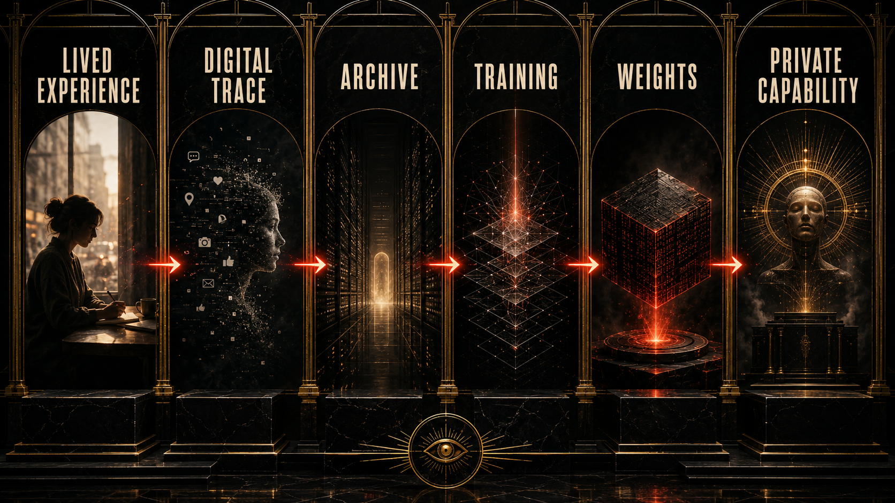

The opening wound: how humanity was turned into signal before AI could be sold as destiny.

Before the machine could speak, we had to be broken down into pieces it could keep.
Not pieces in the poetic sense. Pieces in the storage sense. Pieces in the platform sense. Search residue. Voice residue. Face residue. Desire residue. Panic residue. Draft residue. Porn residue. Code residue. Joke residue. Grief residue. Every half-finished thing we threw into the glowing rectangle because we were lonely, bored, horny, ambitious, showing off, spiraling, procrastinating, coping, or just trying not to disappear.
That is where this story starts.
Not with a keynote.
Not with a benchmark.
Not with a founder in a soft jacket promising a new relationship with intelligence.
It starts earlier, in the long era when private platforms figured out that modern life could be captured in real time, stored at industrial scale, and monetized before most people had language for what was happening.
We were told we were entering an age of connection.
What we were actually entering was an age of legibility.
The central claim of this book is simple enough to feel in your chest and serious enough to survive documentation: artificial intelligence did not arrive on top of a clean world. It arrived on top of a harvested world.
The archive had already been built.
That archive was not just books and newspapers. It was the modern human weather system. Social posts. Search logs. Forum wars. Memes. Thirst traps. Classroom uploads. Open-source code. Fan fiction. Rage comments. Therapy language. Product reviews. Location patterns. DMs. Music fragments. Sketches. Stack traces. Family photos. The whole unstable glow of digital life.
What makes that archive politically explosive is not just that it exists. It is that the public was trained to treat its creation as normal, trivial, and basically free. The gesture felt tiny. Post. Swipe. Like. Reply. Upload. Sync. Accept. Continue. We did not feel the scale because scale was the part we were never supposed to see.
That is why the metaphor of technofeudalism matters so much here. In the old feudal order, the lord controlled the land and the serf worked it under conditions of dependency. In the digital order, the platform controls the territory, the user inhabits it, and the harvest is behavioral, cultural, and emotional rather than agricultural. The interface looks playful, but the power relation underneath it is not cute at all.
The feed became land.
Attention became labor.
Data became crop.
The cloud became castle.
And the thing now marketed as frontier intelligence was built from the harvest.
That is the point where this book has to be extra careful, because people hear language like that and assume the claim is mystical or conspiratorial. It is neither. The stronger and colder claim is structural. You do not need to imagine a single smoke-filled room where everyone agreed on the future. You only need to watch incentives line up across enough years.
Platforms learned that human behavior could be captured and sold.
Investors learned that surveillance scaled.
Advertisers learned that prediction paid.
Engineers learned how to operationalize the archive.
Then model builders inherited a world already turned into machine-readable residue.
By the time the public started saying wow, this thing can talk, the deeper story was already old: it could talk because we had spent years feeding it without naming the feed.

That is why the weights question matters so much in the wider research backbone of this project. Most people hear the word weights and mentally file it under math, code, black-box stuff for experts. But in the moral language of this book, a frontier weight is closer to compressed social history than to innocent abstraction. Not a memory in the human sense. Not a soul. Not a secret ghost of every file. But also not some neutral number floating above history like it fell from heaven.
It is the statistical scar left by training.
It is what happens when enough human expression passes through systems designed to condense pattern into capability.
And once that happens, the ownership question becomes unavoidable.
Who owns intelligence trained on human civilization?
Who consented?
Who got paid?
Who got credit?
Who got rendered obsolete after supplying the substrate?
Who gets locked out of the thing built from their own residue?
Those questions are not aesthetic. They are the political center of the age that is arriving.
If the new hierarchy is not only about land, oil, or currency but also about control over model capability, compute access, training archives, and machine-mediated judgment, then what we are watching is not just a tech boom. It is the making of a new empire grammar.
That grammar has a familiar rhythm.
First, the system presents itself as liberation.
Then it becomes infrastructure.
Then it becomes dependency.
Then it becomes gatekeeping.
Then it becomes destiny in the mouths of the people who profited most from making it unavoidable.
That is the emotional trap of the whole AI conversation right now. A lot of people can feel that something enormous is happening, but the language available to them is still weak and fragmented. Some only have startup language. Some only have doom language. Some only have lifestyle language. Some only have vibes. This book is trying to give the reader a different sentence:
The machine did not become powerful because it was magically smarter than history.
It became powerful because history had already been captured, cleaned, sorted, priced, and enclosed.
That changes the moral mood of everything that follows. Social media is no longer a silly prequel. It becomes the extraction phase. Pandemic acceleration is no longer a side episode. It becomes the deepening of dependence. Layoffs are no longer random market weather. They become part of a story in which the same class of firms that harvested human labor learns how to use AI rhetoric to discipline that labor. Access control is no longer a policy niche. It becomes the question of who gets to stand near the new oracle and who gets told to clap from outside the gate.
And maybe the hardest part to admit is that many of us helped build the cultural conditions for it because we were living, flirting, grieving, studying, surviving, flexing, or just trying to belong. There is no honesty in pretending the whole generation stood outside the machine as pure victims. We were inside it. We liked parts of it. We shaped parts of it. We found each other there. We made careers there. We got addicted there. We became ourselves there in ways that were real.
That is what makes the betrayal deeper.
The feed was not fake life.
It was real life conducted inside private territory.
Which means the theft was not abstract either. It was social theft. Cognitive theft. Cultural theft. Temporal theft. A long siphoning of human energy that later reappeared wearing the costume of inevitability.
So this opening chapter makes one request of the reader.
Do not begin the AI story at the chatbot.
Do not begin it at the funding round.
Do not begin it at the benchmark screenshot.
Begin it at the wound.
Begin it at the moment a civilization stopped treating expression as something that belonged first to the people who made it and started treating expression as raw substrate for privately governed systems.
That is where the empire starts making sense.
This chapter adapts the documentary argument developed in the research paper Chapter 00: Opening Framework. The PDF version is here. That paper connects the weights question, the enclosure of human value, the congressional uptake of the argument, and the three-reform destination of the wider dossier.
If that still sounds too big, the next chapter moves to the original bargain that made the rest possible. The empire did not first arrive as a god. It arrived as a free app asking to know us better than we knew ourselves.
To our beloved:
Copyright Mark Uriostegui 2026